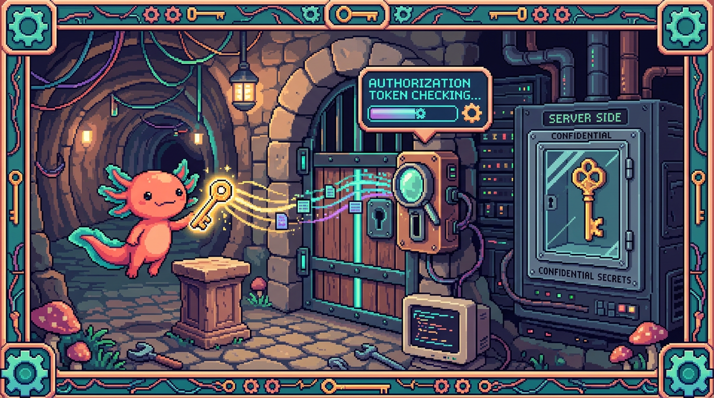

Capitulo 09 — Autenticación: claves, tokens y Bearer

¡Hola de nuevo! Soy Bit, tu ajolote guía. En el capítulo anterior aprendiste a pedirle datos a una API con
fetch. Pero hay un detalle incómodo: las APIs serias no le abren la puerta a cualquiera. Antes de darte la información (o de gastar tu dinero llamando a una IA), quieren saber quién eres y qué tienes permiso de hacer. En este capítulo vamos a entender cómo te identificas ante un servidor: con claves, con tokens, con el famoso headerAuthorizationy la palabritaBearer. Y sobre todo, vas a aprender la regla de oro que repetiré hasta cansarte: las claves secretas viven en el servidor, JAMÁS en el cliente. Respira hondo, que esto es lo que separa a un proyecto de juguete de uno serio. 🦎
1. ¿Por qué un servidor necesita saber quién eres?
Imagina que la API de Claude (la IA de Anthropic) es un restaurante. Tú llegas, pides un plato carísimo (procesar texto con IA cuesta dinero real) y al final alguien tiene que pagar la cuenta. Si el restaurante no supiera quién eres, cualquiera podría pedir mil platos a tu nombre. Por eso, cada vez que llamas a una API que cuesta dinero o que devuelve datos privados, tienes que demostrar tu identidad.
En tunal-digital (un sitio web de HTML, CSS y JavaScript puro con un chat de IA) ese chat habla con la API de Claude, y Anthropic necesita saber de qué cuenta descontar el costo. En Faro (el organizador de proyectos en Next.js) la app lee tus repositorios de GitHub y tus archivos de Google Drive: información privadísima que solo tú puedes ver. En ambos casos hace falta decir "soy yo, déjame pasar".
🟦 ¿Qué significa? — API
Una API (Application Programming Interface, interfaz de programación de aplicaciones) es la "ventanilla" por la que un programa le pide cosas a otro. En vez de hablar con un humano, tu código habla con otro servicio enviándole peticiones. ¿Para qué sirve? Para reutilizar servicios que ya existen (un modelo de IA, una base de datos, GitHub) sin tener que construirlos tú. ¿Dónde se usa en un repo real? En tunal-digital, el chat usa la API de Claude para responder. En Faro, se usan las APIs de GitHub, Google Drive y OpenAI.
2. Autenticación vs. autorización: no son lo mismo
Estas dos palabras se parecen tanto que es facilísimo confundirlas, pero significan cosas distintas. Vamos despacio.
- Autenticación responde a la pregunta: ¿quién eres? Es como mostrar tu cédula o credencial en la entrada.
- Autorización responde a: ¿qué tienes permiso de hacer? Es como decir "vale, eres tú, pero solo puedes entrar a la sala A, no a la B".
Primero te autenticas (demuestras quién eres) y después el sistema decide a qué tienes acceso (te autoriza).
🟦 ¿Qué significa? — Autenticación
Autenticar es probar que eres quien dices ser. Lo logras presentando algo que solo tú tienes: una contraseña, una clave secreta o un token. ¿Para qué sirve? Para que el servidor confíe en que del otro lado estás tú y no un impostor. ¿Dónde se usa en un repo real? En RachaSimple (React + TypeScript + Supabase), cuando inicias sesión con Supabase Auth, te estás autenticando: demuestras que la cuenta es tuya.
🟦 ¿Qué significa? — Autorización
Autorizar es decidir qué acciones puede realizar alguien ya autenticado. Una vez que el servidor sabe quién eres, mira tus permisos. ¿Para qué sirve? Para que cada usuario solo toque lo suyo: tú ves tus proyectos, no los de otra persona. ¿Dónde se usa en un repo real? En Faro, después de autenticarte, OAuth te autoriza a leer solo tus repos de GitHub y tus archivos de Drive, nada más.
💡 Tip
Truco para no olvidarlo: autenticación = identidad (¿quién?), autorización = permisos (¿qué puedes?). Una abre la puerta; la otra reparte las llaves de las habitaciones.
3. La forma más simple: la API key
La manera más sencilla de autenticarte ante una API es con una API key (clave de API). Es una cadena larga de letras y números, algo como sk-ant-api03-AbC123..., que el servicio te entrega cuando creas tu cuenta. Cada vez que llamas a la API, la incluyes en tu petición. El servidor la lee, la reconoce y dice "ah, eres tú, adelante".
🟦 ¿Qué significa? — API key
Una API key es una cadena secreta que identifica tu cuenta ante una API. Funciona como una combinación de usuario y contraseña en un solo texto. ¿Para qué sirve? Para autenticarte de forma rápida sin escribir usuario ni contraseña en cada llamada. ¿Dónde se usa en un repo real? En tunal-digital, la clave de la API de Claude (
ANTHROPIC_API_KEY) es la que autoriza al chat a hablar con la IA. En Faro, la clave de OpenAI cumple el mismo papel para generar descripciones y roadmaps.
Una API key es muy poderosa: quien la tenga puede gastar tu dinero o leer tus datos como si fuera tú. No tiene cara, no pregunta contraseña: la clave es la identidad. Por eso protegerla es lo más importante de todo este capítulo.
⚠️ Cuidado
Una API key filtrada es como dejar tu tarjeta de crédito con el PIN pegado tirada en la calle. Si alguien encuentra la clave de Claude o de OpenAI de tu proyecto, puede hacer miles de llamadas y la cuenta te llega a ti. Nunca, nunca la pongas en un sitio público.
4. El header Authorization y los tokens Bearer
Bien, ya tienes una clave. ¿Dónde la metes dentro de la petición? La respuesta es: en un header (encabezado) llamado Authorization.
Recuerda del capítulo de fetch que toda petición HTTP lleva headers: pequeñas etiquetas de información extra (como Content-Type que dice qué formato envías). Pues hay un header reservado especialmente para credenciales: Authorization.
🟦 ¿Qué significa? — Header HTTP
Un header (encabezado) es un par "nombre: valor" que viaja junto a una petición o respuesta HTTP y aporta información extra sobre ella. ¿Para qué sirve? Para mandar metadatos: qué formato usas, quién eres, en qué idioma quieres la respuesta, etc. ¿Dónde se usa en un repo real? En el Worker de tunal-digital se arma el header
x-api-keypara hablar con Anthropic; en Faro, las llamadas a GitHub y OpenAI usan el headerAuthorization.
El valor de Authorization casi nunca es la clave a secas. Suele llevar delante una palabra que indica el tipo de credencial. La más común es Bearer.
🟦 ¿Qué significa? — Token Bearer
Un token Bearer ("portador") es un tipo de credencial que sigue una regla simple: quien lo porta, puede usarlo. Se envía en el header así:
Authorization: Bearer <token>. ¿Para qué sirve? Para autenticarte mostrando un token. El servidor lee el token tras la palabraBearery verifica que sea válido. ¿Dónde se usa en un repo real? En Faro, al llamar a la API de OpenAI se mandaAuthorization: Bearer sk-.... La palabra "Bearer" le dice a OpenAI: "lo que viene después es un token de portador".
Así se ve una llamada típica desde el servidor de Faro a OpenAI (fíjate en el header):
// Esto corre en el SERVIDOR de Faro (una API route de Next.js), nunca en el navegador
const respuesta = await fetch("https://api.openai.com/v1/chat/completions", {
method: "POST",
headers: {
"Content-Type": "application/json",
// La palabra "Bearer" + un espacio + el token secreto
"Authorization": `Bearer ${process.env.OPENAI_API_KEY}`,
},
body: JSON.stringify({
model: "gpt-4o-mini",
messages: [{ role: "user", content: "Resume este proyecto" }],
}),
});
🔎 En tu código
"Bearer" significa literalmente "portador". No hace falta una contraseña adicional: el simple hecho de presentar el token basta. Por eso es tan cómodo... y por eso filtrarlo es tan peligroso. Quien porte el token, manda.
💡 Tip
No todas las APIs usan
Bearer. Anthropic (Claude) prefiere un header propio llamadox-api-key. Por eso en tunal-digital verásx-api-keyen lugar deAuthorization: Bearer. La idea de fondo es la misma —mandar tu clave secreta en un header— solo cambia el nombre y el formato. Siempre revisa la documentación de la API que uses.
5. Tokens de acceso y tokens de refresco (a grandes rasgos)
Las API keys nunca caducan (a menos que las borres tú). Eso es cómodo pero arriesgado: si se filtra una, sirve para siempre. Por eso los sistemas modernos de login, como el de OAuth que usa Faro, prefieren tokens que caducan pronto. Aquí aparecen dos tipos que conviene distinguir.
🟦 ¿Qué significa? — Token de acceso
Un token de acceso (access token) es una credencial de vida corta (suele durar minutos u horas) que te da acceso a un recurso protegido. ¿Para qué sirve? Para hacer peticiones autorizadas durante un rato. Si se filtra, el daño es limitado porque caduca rápido. ¿Dónde se usa en un repo real? En Faro, después de conectar tu cuenta de GitHub con OAuth, la app recibe un token de acceso que usa para leer tus repos durante un tiempo limitado.
🟦 ¿Qué significa? — Token de refresco
Un token de refresco (refresh token) es una credencial de vida larga cuya única misión es pedir nuevos tokens de acceso cuando el anterior caduca, sin que tengas que volver a iniciar sesión. ¿Para qué sirve? Para mantener tu sesión activa sin pedirte la contraseña a cada rato. ¿Dónde se usa en un repo real? En Faro (y en RachaSimple con Supabase Auth), cuando el token de acceso vence, el token de refresco saca uno nuevo por detrás. Tú ni te enteras.
En una frase: el token de acceso es un pase de un día para entrar al evento; el token de refresco es la membresía anual que te deja recoger un pase nuevo cuando el de hoy expira.
⚠️ Cuidado
El token de refresco es más sensible que el de acceso, porque dura mucho y puede generar accesos nuevos indefinidamente. Por eso en Faro estos tokens se guardan en el servidor, en la tabla
user_connections, protegida con RLS (las reglas de seguridad de Supabase que viste en el módulo 07). Nunca llegan al navegador.
6. La regla de oro: NUNCA expongas una clave en el cliente
Llegamos al corazón del capítulo. Préstame toda tu atención, porque este es el error más común y más caro de los principiantes.
Recuerda la diferencia del módulo anterior:
- El cliente es el código que corre en el navegador del usuario (el HTML, CSS y JS que se descarga). Cualquiera puede leerlo: basta con abrir las herramientas de desarrollo (F12) y mirar.
- El servidor es el código que corre en una máquina que tú controlas. El usuario nunca ve ese código; solo recibe el resultado.
🟦 ¿Qué significa? — Cliente y servidor
El cliente es el programa del lado del usuario (el navegador). El servidor es el programa del lado tuyo, en una máquina remota, que el usuario no puede inspeccionar. ¿Para qué sirve? Separar lo público (cliente) de lo secreto (servidor). Lo que pongas en el cliente, lo ve el mundo entero. ¿Dónde se usa en un repo real? En tunal-digital el cliente es el sitio HTML/JS que ves en el navegador; el servidor es un Cloudflare Worker. En Faro, el cliente son los componentes de React y el servidor son las API routes de Next.js.
Ahora la consecuencia, en mayúsculas porque importa de verdad:
TODO lo que pongas en el cliente es público. Si escribes tu API key de Claude dentro de un archivo .js del navegador, cualquier visitante puede abrir F12, ir a la pestaña de red o de fuentes, copiar tu clave y empezar a gastar tu dinero. No hay forma de "esconderla" en el cliente: ofuscarla, partirla en pedazos, codificarla en base64... todo eso se puede deshacer en segundos. La única solución real es que la clave nunca salga del servidor.
⚠️ Cuidado
Esta es una regla explícita de seguridad del proyecto Faro: "Tokens y secretos solo en el servidor. Nunca exponer claves en el cliente ni commitearlas." No es un consejo opcional: es la línea que separa un proyecto seguro de un desastre. Trátalo como ley.
🟦 ¿Qué significa? — Commitear una clave
Commitear una clave es, sin querer, guardar el secreto dentro del código que subes a un repositorio (un
git commit). Aunque luego la borres, queda registrada en el historial de Git. ¿Para qué sirve? ...para nada bueno: es justo lo que NUNCA debes hacer. Los bots rastrean GitHub buscando claves filtradas y las usan en minutos. ¿Dónde se usa en un repo real? En ningún repo bien hecho. Por eso Faro y tunal-digital mantienen sus claves fuera del código, en variables de entorno.
7. Variables de entorno: dónde viven los secretos
Si la clave no va en el código del cliente ni se commitea, ¿dónde se guarda entonces? En una variable de entorno.
🟦 ¿Qué significa? — Variable de entorno
Una variable de entorno es un valor de configuración que vive fuera del código, en el entorno donde corre el programa (el servidor, tu máquina, la nube). El código la lee por su nombre, pero su contenido no está escrito en ningún archivo del repositorio. ¿Para qué sirve? Para guardar secretos (claves, contraseñas) y configuraciones sin meterlos en el código que se sube a Git. ¿Dónde se usa en un repo real? En Faro, la clave de OpenAI vive en
process.env.OPENAI_API_KEY. En tunal-digital, la clave de Anthropic vive como un secret del Cloudflare Worker.
En desarrollo, las variables suelen ir en un archivo llamado .env (o .env.local en Next.js) que se mantiene fuera de Git (se añade a .gitignore). Se ve así:
# Archivo .env.local de Faro — este archivo NUNCA se sube a Git
OPENAI_API_KEY=sk-proj-AbC123tuClaveSecretaAqui
GITHUB_CLIENT_SECRET=ghs_otraClaveSecreta
Y desde el código del servidor las lees con process.env:
// En el servidor de Faro (Node.js). NUNCA pongas esto en un componente del navegador.
const clave = process.env.OPENAI_API_KEY;
if (!clave) {
throw new Error("Falta OPENAI_API_KEY en las variables de entorno");
}
💡 Tip
En Next.js (el framework de Faro) hay una convención importante: las variables que empiezan con
NEXT_PUBLIC_sí llegan al navegador (son públicas). Las que no llevan ese prefijo se quedan en el servidor. Regla simple: una clave secreta JAMÁS debe llamarseNEXT_PUBLIC_ALGO. Si lo haces, la estás regalando al cliente.🔎 En tu código
Cuando despliegas Faro en producción (por ejemplo en Vercel), no subes el archivo
.env. En su lugar, configuras las variables en el panel de la plataforma. Así el secreto vive en la nube del servidor y nunca toca el repositorio ni el navegador.
8. El patrón "proxy": cómo tunal-digital esconde la clave de Claude
Aquí viene la parte más bonita, porque resuelve un dilema real. tunal-digital es un sitio de puro HTML, CSS y JavaScript: no tiene servidor propio tradicional. Pero su chat necesita la clave de Claude, ¡y esa clave no puede ir en el navegador! ¿Cómo se hace?
La respuesta es un proxy: una pieza pequeña de código que corre en el servidor (un Cloudflare Worker) y que se sitúa en medio entre el navegador y la API de Claude.
🟦 ¿Qué significa? — Proxy
Un proxy es un intermediario: un programa que recibe tu petición, la reenvía a otro servicio (añadiendo el secreto), y te devuelve la respuesta. El cliente nunca habla directamente con la API final. ¿Para qué sirve? Para que la clave secreta viva en el intermediario (servidor) y no en el cliente. El navegador solo habla con tu proxy, que sí conoce la clave. ¿Dónde se usa en un repo real? En tunal-digital, el Cloudflare Worker es el proxy entre el chat del navegador y la API de Claude.
🟦 ¿Qué significa? — Cloudflare Worker
Un Cloudflare Worker es un pequeño programa que corre en los servidores de Cloudflare (no en el navegador). Es código de servidor ligero, ideal para sitios que no tienen un backend grande. ¿Para qué sirve? Para ejecutar lógica segura del lado del servidor (como guardar una clave) en proyectos web sencillos. ¿Dónde se usa en un repo real? En tunal-digital es exactamente lo que esconde la clave de Anthropic.
El flujo es así:
- El navegador (cliente) envía el mensaje del usuario al Worker. No conoce ninguna clave.
- El Worker (servidor) recibe el mensaje, le añade la clave secreta de Claude (que tiene guardada como variable de entorno) y reenvía todo a la API de Anthropic.
- La API de Claude responde al Worker.
- El Worker devuelve la respuesta al navegador.
El cliente nunca ve la clave. Solo ve la respuesta final. Mira la diferencia entre las dos mitades:
// === LADO CLIENTE (navegador) en tunal-digital ===
// Habla con NUESTRO Worker, no con Anthropic. Aquí NO hay ninguna clave.
async function preguntarAlChat(mensaje) {
const respuesta = await fetch("https://chat.tunal-digital.workers.dev", {
method: "POST",
headers: { "Content-Type": "application/json" },
body: JSON.stringify({ mensaje }),
});
return await respuesta.json();
}
// === LADO SERVIDOR (Cloudflare Worker) en tunal-digital ===
// Aquí SÍ vive la clave, leída de una variable de entorno (env.ANTHROPIC_API_KEY).
export default {
async fetch(request, env) {
const { mensaje } = await request.json();
const respuesta = await fetch("https://api.anthropic.com/v1/messages", {
method: "POST",
headers: {
"Content-Type": "application/json",
// La clave secreta SOLO existe aquí, en el servidor
"x-api-key": env.ANTHROPIC_API_KEY,
"anthropic-version": "2023-06-01",
},
body: JSON.stringify({
model: "claude-3-5-sonnet-20241022",
max_tokens: 1024,
messages: [{ role: "user", content: mensaje }],
}),
});
return new Response(await respuesta.text(), {
headers: { "Content-Type": "application/json" },
});
},
};
🔎 En tu código
Fíjate en el detalle clave: en el lado cliente la URL es la de tu Worker. En el lado servidor la URL es la de Anthropic y aparece
x-api-key. La clave solo existe en la segunda mitad. Aunque un visitante abra F12 y lea todo el JavaScript del sitio, lo único que verá es la dirección de tu Worker, nunca la clave de Claude.💡 Tip
Faro aplica exactamente la misma filosofía, solo que con otra tecnología. Sus secretos (clave de OpenAI, secretos de OAuth de GitHub y Google) viven en el servidor: en variables de entorno y en la tabla
user_connectionsprotegida con RLS. Los componentes de React del navegador nunca tocan esos valores; piden los datos a las API routes de Next.js, que son las únicas que conocen los secretos. Mismo principio, dos proyectos: el secreto nunca cruza al cliente.
9. Juntando todo: el viaje de una petición segura
Vamos a recapitular cómo encajan todas las piezas con el ejemplo de tunal-digital:
- El usuario escribe en el chat. El navegador (cliente) manda el texto a tu Worker (servidor). Sin claves.
- El Worker se autentica ante Anthropic: añade la clave secreta en el header
x-api-key, que lee de una variable de entorno. - Anthropic verifica la clave (autenticación), comprueba que tu cuenta tenga saldo (autorización) y procesa la petición.
- La respuesta vuelve al Worker y de ahí al navegador.
Toda la cadena respeta la regla de oro: el secreto nunca sale del servidor. Esa es la idea que tienes que llevarte de este capítulo.
💡 Tip
Si algún día dudas "¿esto puede ir en el cliente?", hazte una pregunta brutal pero infalible: ¿me importaría que un desconocido lo viera? Si la respuesta es sí, va en el servidor. Las claves, tokens y secretos siempre responden que sí. 🦎
✅ Checklist — ¿ya domino esto?
- [ ] Explico la diferencia entre autenticación (¿quién eres?) y autorización (¿qué puedes hacer?).
- [ ] Sé qué es una API key y por qué quien la tenga puede actuar como yo.
- [ ] Reconozco el header
Authorization: Bearer <token>y sé qué significa "Bearer" (portador). - [ ] Entiendo que algunas APIs (como Claude/Anthropic) usan un header propio como
x-api-keyen vez deBearer. - [ ] Distingo a grandes rasgos un token de acceso (vida corta) de un token de refresco (vida larga).
- [ ] Tengo clarísimo que todo lo que va en el cliente es público y que las claves jamás van ahí.
- [ ] Sé qué es una variable de entorno y por qué los secretos viven en ella, fuera de Git.
- [ ] Entiendo el patrón proxy y cómo el Cloudflare Worker de tunal-digital esconde la clave de Claude.
- [ ] Puedo explicar cómo Faro guarda sus secretos en el servidor (variables de entorno +
user_connectionscon RLS). - [ ] Nunca, jamás, voy a commitear una clave a un repositorio.
🧪 Ejercicios
-
Clasifica las frases. Para cada una di si describe autenticación o autorización: (a) "El sistema verifica tu contraseña al entrar". (b) "Solo puedes editar tus propios proyectos, no los de otros". (c) "Faro recibe tu token de GitHub y confirma que la cuenta es tuya". (d) "Tu plan permite hasta 5 análisis al mes".
-
💻 Caza la clave filtrada. Abre cualquier sitio web con un chat o función de IA, pulsa F12, ve a la pestaña Network (Red) y observa las peticiones que salen al escribir un mensaje. ¿Ves alguna clave secreta en los headers que viajan desde el navegador? (En un sitio bien hecho como tunal-digital, solo deberías ver la URL del Worker, nunca la clave de Claude). Escribe qué encontraste.
-
💻 Arma tu header Bearer. Escribe en JavaScript el objeto
headersde unfetchque llame a una API ficticia usando un token Bearer leído de una variable de entorno. Pista: usaprocess.envy una template string con backticks. -
Dibuja el proxy. En papel, dibuja las cuatro cajas del flujo de tunal-digital (Navegador → Worker → API de Claude → de vuelta) y marca con un círculo rojo el único lugar donde existe la clave secreta. Explica en una frase por qué está ahí y no en el navegador.
-
💻 Crea un
.envde mentira. Crea un archivo.env.localcon dos variables inventadas (OPENAI_API_KEYyGITHUB_CLIENT_SECRET). Luego crea un.gitignoreque contenga la línea.env.local. Explica con tus palabras por qué ese.gitignorees la pieza que evita que la clave acabe en Git. -
Refresco en una frase. Sin mirar el capítulo, explica con tus palabras la diferencia entre un token de acceso y uno de refresco. Luego compáralo con la sección 5.
¡Lo lograste! 🦎 Ahora sabes la regla que muchos aprenden por las malas: los secretos viven en el servidor, nunca en el cliente. En el próximo capítulo daremos el siguiente paso natural —OAuth— para entender cómo Faro consigue, sin guardar tu contraseña de GitHub, permiso para leer tus repositorios. Te espero ahí. — Bit